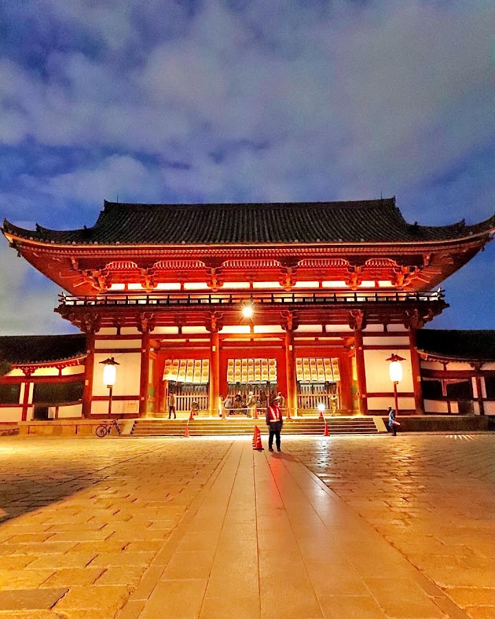
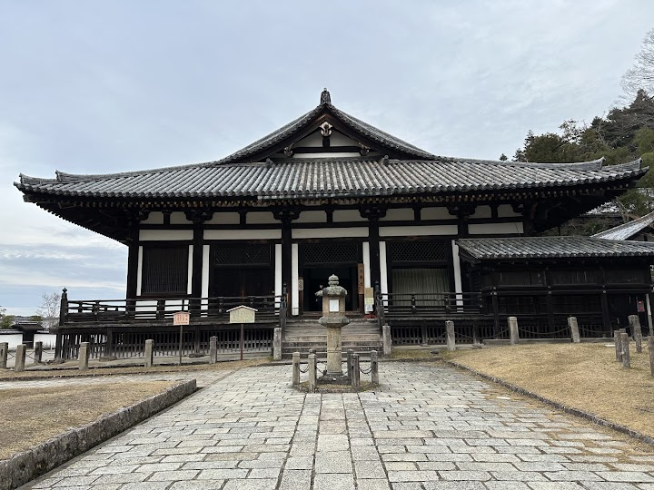
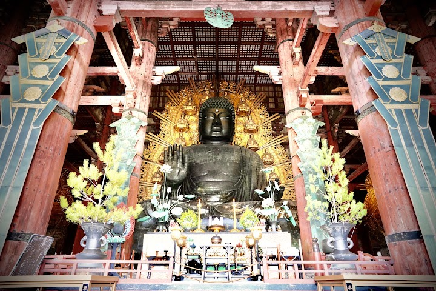
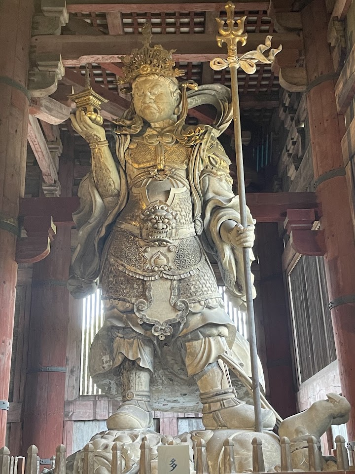
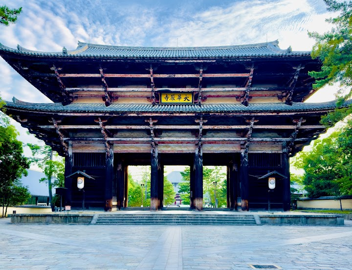

Tōdai-ji
Tōdai-ji, a magnificent Buddhist temple established in the mid-700s, stands as one of Japan's most significant cultural landmarks. Nestled within Nara Park, this historic site is renowned for housing one of the largest bronze Buddha statues in the country. As you approach Tōdai-ji through its lively surroundings, you'll encounter groups of visitors enjoying the scenic beauty and interacting with Nara's famous deer.
Open in Google Maps (street view, more photos and reviews there)





